Human Exploration
From the first beeps of Sputnik to the infrared eyes of the James Webb Space Telescope — the complete chronicle of humanity’s journey into the cosmos.
On October 4, 1957, the Soviet Union launched the world's first artificial satellite — a polished aluminium sphere barely 58 cm across — into low Earth orbit aboard an R-7 rocket. Its rhythmic radio beeps, detectable by amateur radios worldwide, sent a shockwave through Western governments and the general public alike. The Space Age had begun, and with it one of the most consequential technological competitions in human history.
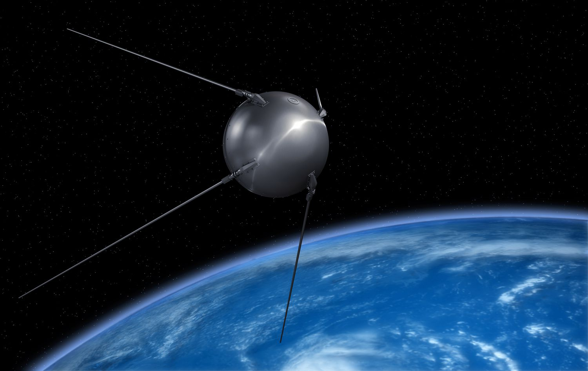
Cosmonaut Yuri Gagarin became the first human to travel into space aboard Vostok 1, completing one full orbit of Earth in 108 minutes before parachuting to the Soviet steppe. His single exclamation at liftoff — "Poyekhali!" (Let’s go!) — became one of the most iconic utterances of the 20th century. Gagarin’s flight proved that humans could survive in the vacuum of space and opened the door to all crewed missions that followed.
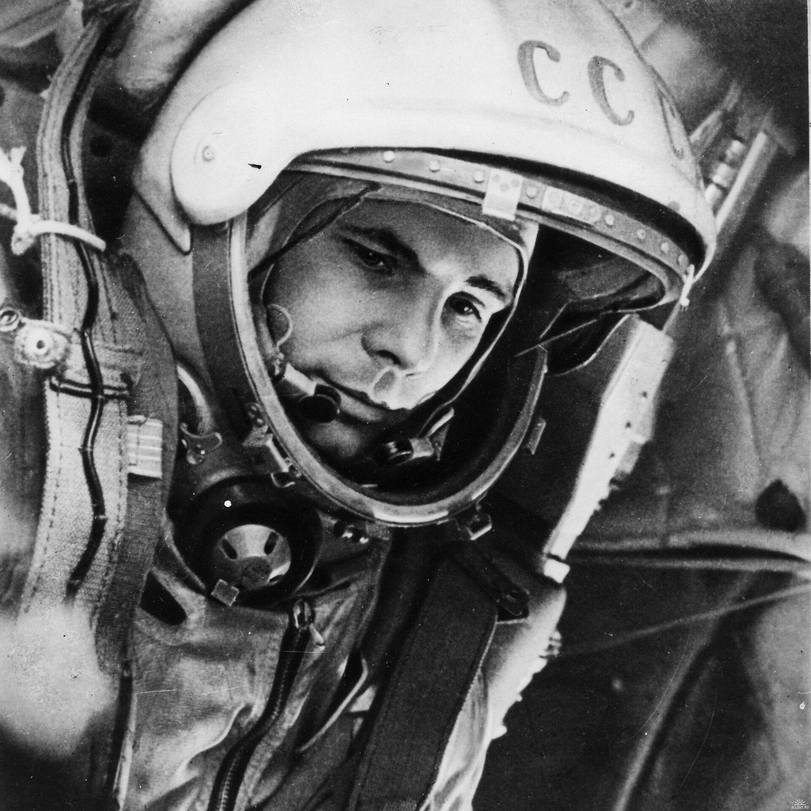
Alexei Leonov floated out of the Voskhod 2 spacecraft and became the first human to perform a spacewalk (EVA), spending 12 minutes outside tethered by a 5-metre cord with only a spacesuit between him and the void. His suit inflated in the vacuum, making re-entry nearly impossible — he narrowly survived by venting suit pressure, a decision that nearly caused decompression sickness. The feat proved humans could work outside spacecraft, a capability essential to every Moon mission, space station, and satellite repair that followed.
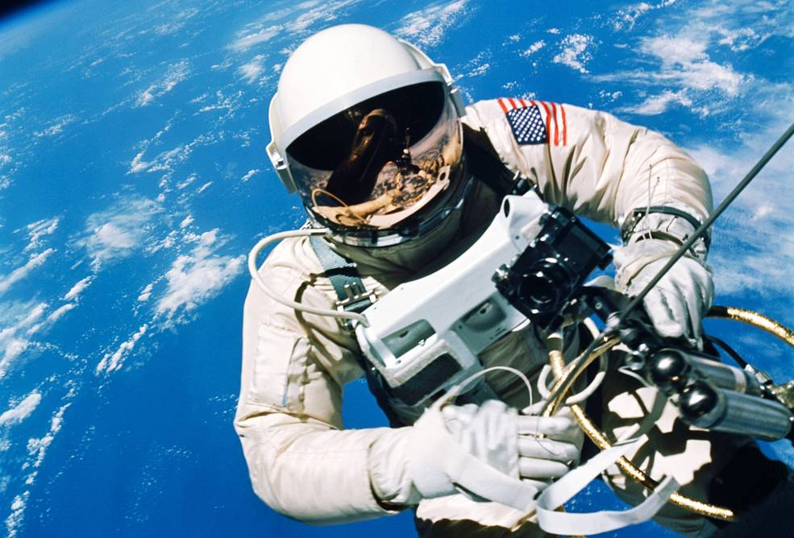
Neil Armstrong and Buzz Aldrin became the first humans to walk on another world, landing the Eagle lunar module in the Sea of Tranquility while Michael Collins orbited above in Columbia. Armstrong’s words — "one small step for man, one giant leap for mankind" — were broadcast live to an estimated 600 million viewers worldwide, roughly one fifth of the global population at the time. The mission fulfilled President Kennedy’s 1961 challenge to land a man on the Moon before the decade’s end, and remains the defining achievement of the Space Age.
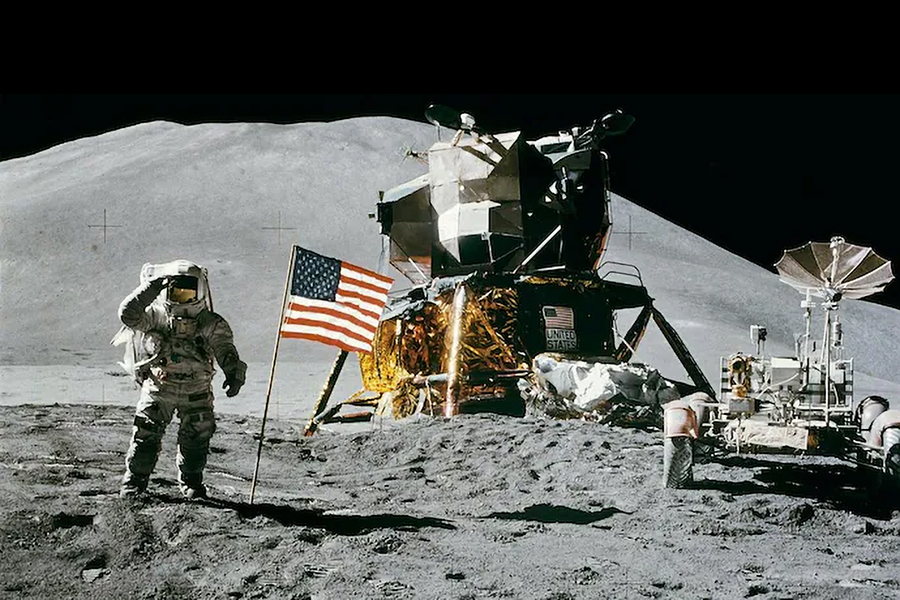
Pioneer 10 became the first spacecraft to traverse the asteroid belt and fly past Jupiter, sending back the first close-up images of the giant planet in December 1973 before continuing outward to become the first human-made object to leave the inner solar system. It carries a gold-anodized aluminium plaque depicting a man, a woman, the solar system’s position, and a map of interstellar hydrogen — a message to any intelligent life that might find it in the distant future. Pioneer 10 sent its last detectable signal to Earth in January 2003 when it was 12 billion kilometres away.
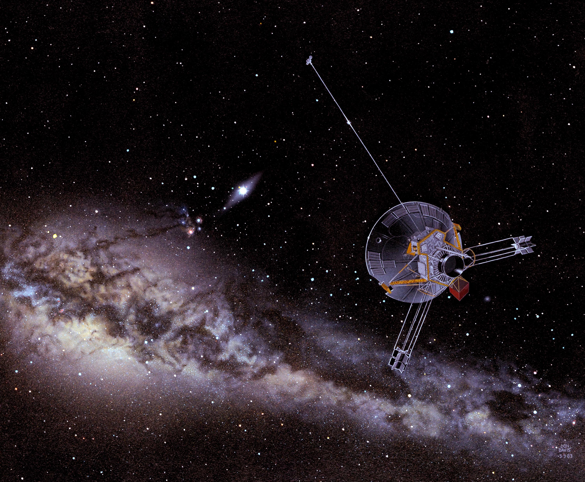
Launched weeks apart in 1977, the twin Voyager probes exploited a rare planetary alignment to fly past Jupiter (1979), Saturn (1980–81), Uranus (1986), and Neptune (1989), collectively discovering active volcanoes on Io, ring systems around Uranus and Neptune, and dozens of new moons. Voyager 1 crossed into interstellar space in August 2012 — the first human-made object to leave the solar system — and both probes continue transmitting data from beyond the heliopause after nearly 50 years of operation. The Pale Blue Dot photograph of Earth taken by Voyager 1 in 1990 at Carl Sagan’s request remains one of the most profound images ever made.
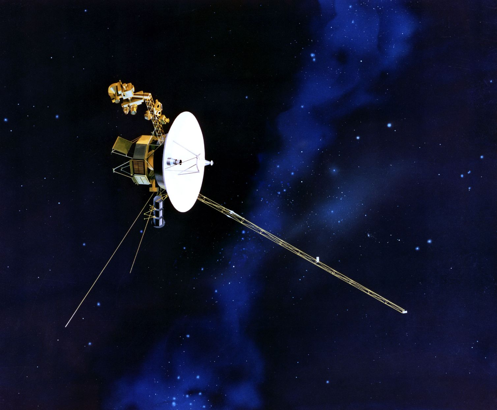
On the 20th anniversary of Gagarin’s flight, Space Shuttle Columbia made its maiden voyage as the world’s first reusable crewed spacecraft, piloted by John Young and Robert Crippen. Over 30 years and 135 missions, the Shuttle program deployed the Hubble Space Telescope, helped assemble the ISS, and carried 355 people into orbit, redefining spaceflight as an ongoing operation rather than a series of historic firsts. Two crews were lost — Challenger (1986) and Columbia (2003) — tragedies that reshaped NASA’s safety culture and ultimately led to the Shuttle’s retirement in 2011.
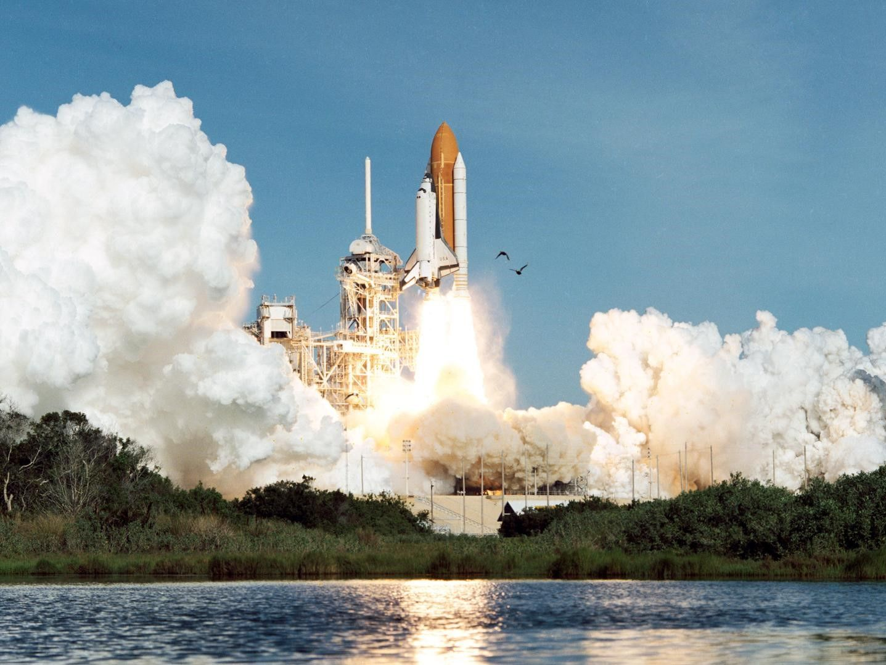
Launched aboard Space Shuttle Discovery, the Hubble Space Telescope became the most scientifically productive astronomical instrument in history despite an initially blurry mirror caused by a manufacturing error of just 2.2 microns. A daring 1993 servicing mission corrected the optics, and Hubble went on to photograph galaxies 13 billion light-years away, measure the age of the universe, discover the accelerating expansion driven by dark energy, and capture images of nebulae and stellar nurseries that became cultural icons. Over 1.5 million observations from Hubble have contributed to more than 21,000 peer-reviewed scientific papers.
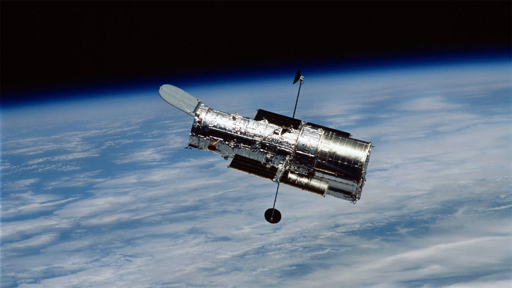
Astronomers Michel Mayor and Didier Queloz announced the discovery of 51 Pegasi b — the first confirmed exoplanet orbiting a Sun-like star — detected via the radial velocity method using the ELODIE spectrograph at the Haute-Provence Observatory in France. The planet was a "hot Jupiter," a gas giant completing an orbit in just 4.2 days, a configuration theorists had thought physically impossible, and its discovery fundamentally challenged our models of planetary formation. Mayor and Queloz received the Nobel Prize in Physics in 2019; their discovery directly inspired the Kepler mission and the detection of over 5,600 confirmed planets since.
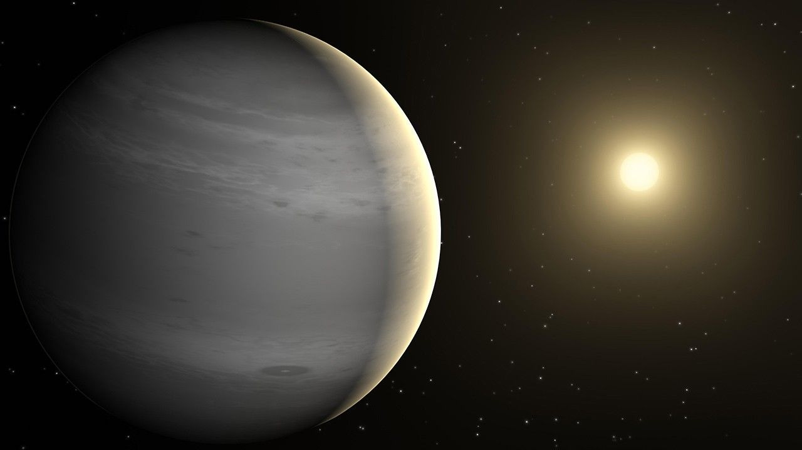
Russia launched the Zarya module on November 20, 1998, beginning the largest and most complex construction project ever undertaken in space. The ISS involved contributions from 15 nations, required over 40 assembly flights across 13 years, and used more than 1,500 hours of spacewalks to assemble its pressurised volume larger than a six-bedroom house. It has been continuously inhabited since November 2, 2000 — hosting over 270 people from 20 countries — and serves as both an international research laboratory and a symbol that former adversaries can collaborate peacefully in the exploration of space.
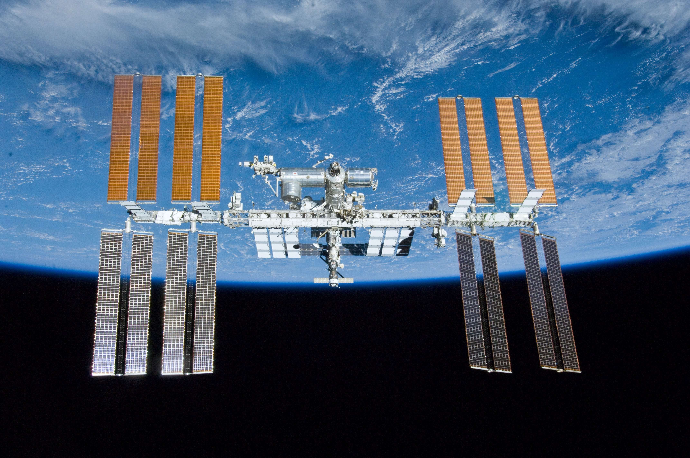
NASA’s twin Mars Exploration Rovers landed on opposite sides of Mars for missions planned to last 90 Martian days; Spirit operated for over 6 years before becoming stuck, and Opportunity shattered expectations by surviving nearly 15 years and travelling 45.16 km before a global dust storm ended its mission in June 2018. Together they confirmed beyond doubt that ancient Mars had liquid water on its surface, finding evidence of ancient shorelines, lake beds, and water-altered minerals at both landing sites. Their discoveries directly motivated the more sophisticated Curiosity and Perseverance missions and the ongoing search for ancient Martian life.
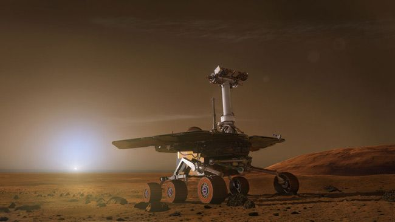
Launched in January 2006, New Horizons was the fastest spacecraft ever built at liftoff, hurtling toward the outer solar system at over 58,000 km/h. On July 14, 2015, it flew past Pluto at a closest approach of 12,500 km, returning the first high-resolution images of the dwarf planet and its moons — revealing a world of stunning geological complexity, including the heart-shaped nitrogen ice plain Tombaugh Regio, towering mountains of water ice, a complex atmosphere, and possible cryovolcanism. The mission transformed our understanding of Pluto from a vague telescopic dot to a living, geologically active world unlike anything previously imagined.
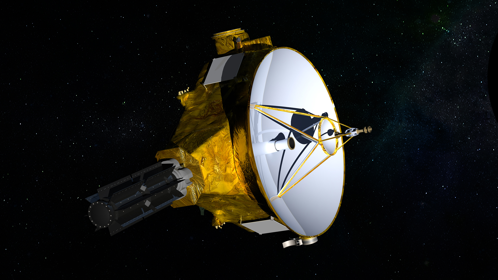
NASA’s Curiosity rover made a dramatic "seven minutes of terror" sky crane landing inside Gale Crater, and in its first year confirmed that the crater was once an ancient lake with fresh water and all the chemical ingredients necessary to support microbial life — the first direct evidence of a Martian environment that could have been habitable. Still operational over a decade later, Curiosity has climbed the 5 km foothills of Mount Sharp, detected complex organic molecules in ancient rock, measured radiation levels relevant to future crewed missions, and directly paved the scientific path for the Perseverance mission. It remains the most capable Mars surface laboratory ever deployed.
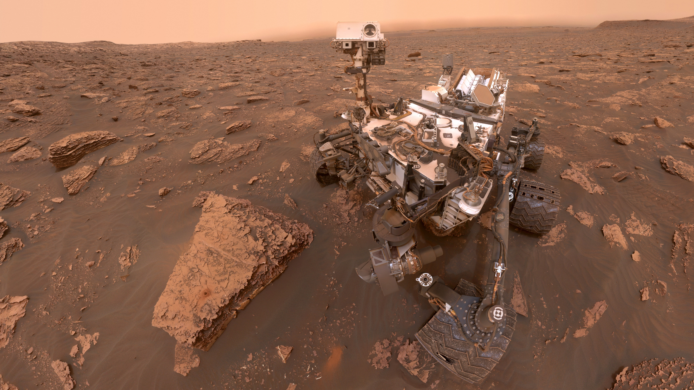
SpaceX’s Falcon 9 rocket delivered 11 satellites to orbit and then returned its first-stage booster to a precision vertical landing at Cape Canaveral — the first recovery of an orbital-class rocket booster in history. The achievement fundamentally changed the economics of spaceflight: reusable boosters mean the most expensive part of a rocket can be reflown tens of times rather than discarded in the ocean after a single use. By 2024, SpaceX had reflown first-stage boosters more than 250 times, with some individual boosters flying over 20 missions, slashing launch costs and enabling a new era of commercial, scientific, and eventually crewed spaceflight at unprecedented cadence.
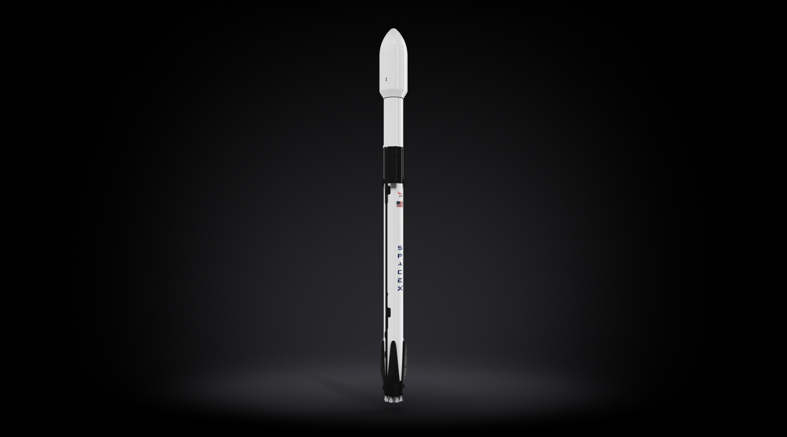
Scientists announced the first direct detection of gravitational waves — ripples in the fabric of spacetime itself — produced by the merger of two black holes 1.3 billion light-years away, detected on September 14, 2015 by LIGO’s twin observatories in Washington and Louisiana. The detection confirmed a century-old prediction of Einstein’s general theory of relativity and opened an entirely new observational window on the universe, earning the 2017 Nobel Prize in Physics for Rainer Weiss, Kip Thorne, and Barry Barish. For the first time in history, humanity had not just seen the universe, but heard it — directly detecting the stretching and squeezing of space itself caused by the most violent events in the cosmos.
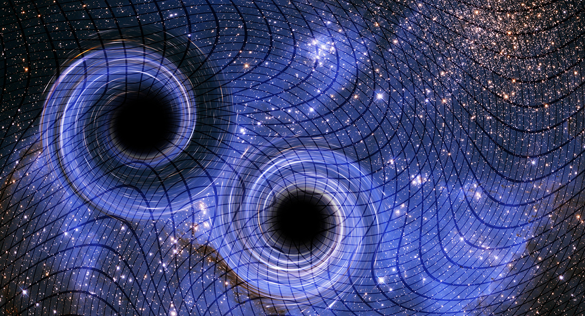
The Event Horizon Telescope collaboration released the first-ever direct image of a black hole: M87*, a 6.5-billion-solar-mass object at the center of galaxy M87, 55 million light-years away, surrounded by a glowing ring of superheated plasma orbiting just outside the event horizon. The image required synchronizing radio telescopes across four continents to create a virtual Earth-sized dish — one of the greatest feats of scientific coordination in history — and matched the predictions of Einstein’s general relativity with extraordinary precision. In 2022, the same collaboration released the first image of Sagittarius A* — the 4-million-solar-mass black hole at the center of our own Milky Way.
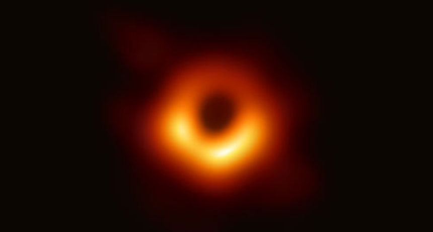
NASA’s Perseverance rover landed in Jezero Crater using a sky crane, carrying the Ingenuity helicopter — the first powered aircraft ever to fly on another planet. Ingenuity’s April 19 flight lasted just 39 seconds and climbed 3 metres, but like the Wright Brothers’ first flight, it proved controlled powered flight was possible in Mars’s thin atmosphere. Perseverance has since confirmed ancient lake sediments and organic molecules in Jezero, collected 23 rock core samples for eventual Earth return, produced breathable oxygen from CO₂ using the MOXIE experiment, and exceeded its operational lifetime several times over.
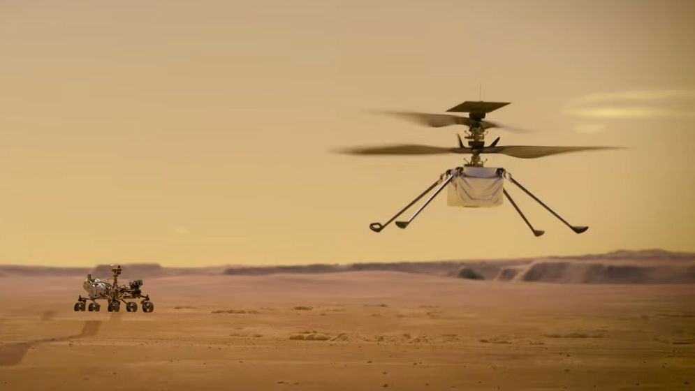
Launched on Christmas Day after more than two decades of development and a budget exceeding $10 billion, the James Webb Space Telescope is the largest and most powerful space observatory ever built, observing the universe primarily in infrared light with a 6.5-metre gold-plated mirror that unfurled in space over two weeks after launch. Its first full-colour science images, released in July 2022, revealed galaxies as they appeared just 300 million years after the Big Bang, dissected the atmospheres of exoplanets, and unveiled the hidden stellar nurseries inside molecular clouds with a clarity never before achieved. JWST is already rewriting our understanding of how the first galaxies formed, how stars and planets are born, and what conditions exist on worlds beyond our solar system.
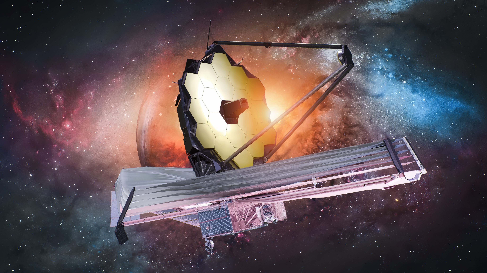
NASA’s Double Asteroid Redirection Test spacecraft deliberately collided with the moonlet Dimorphos — part of the Didymos binary asteroid system — at 6.6 km/s, marking the first time humanity had intentionally and successfully altered the orbit of a natural solar system body. The impact shortened Dimorphos’s orbital period around Didymos by 33 minutes — far exceeding the 73-second minimum threshold for mission success — proving that kinetic impactor technology is a viable planetary defense strategy. ESA’s Hera mission, launched in 2024, will return to the system to characterise the impact crater in detail and measure the full deflection effect, completing the world’s first planetary defense experiment.
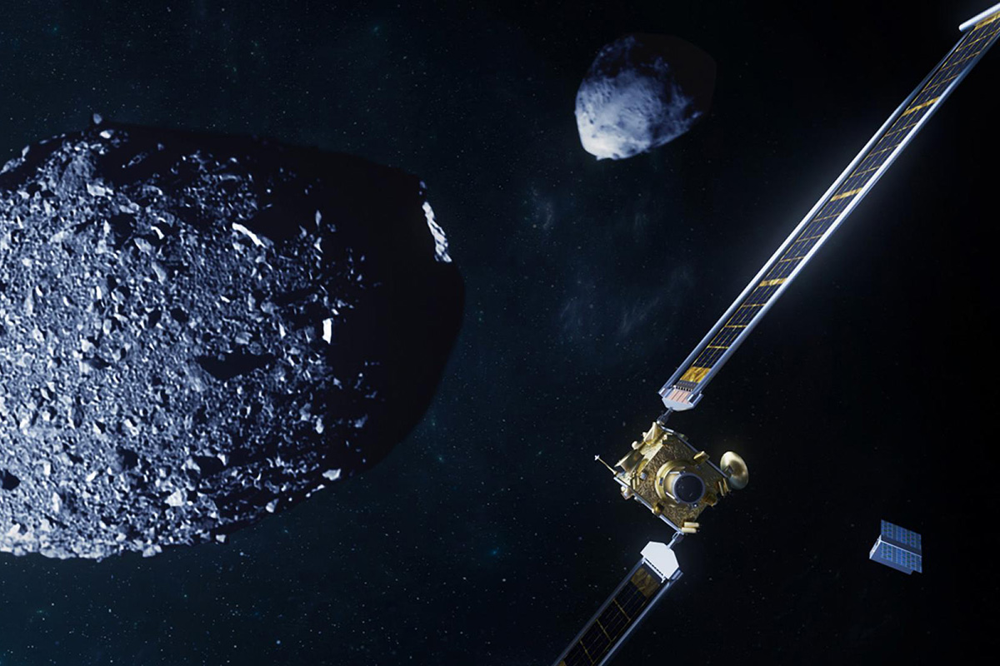
Launched on October 14, 2024 aboard a Falcon Heavy rocket, NASA’s Europa Clipper is the largest spacecraft the agency has ever built for a planetary science mission, designed to conduct more than 50 close flybys of Jupiter’s ocean moon Europa and assess whether its vast subsurface ocean could support life. Europa’s ocean, kept liquid by tidal heating from Jupiter’s immense gravity, contains more water than all of Earth’s oceans combined and may be in contact with a rocky seafloor warmed by hydrothermal vents — conditions strikingly similar to the deep-sea environments on Earth where life flourishes without sunlight. If the mission confirms the expected conditions, Europa will become the most scientifically compelling candidate for extraterrestrial life in the solar system and the focus of a future dedicated lander mission.
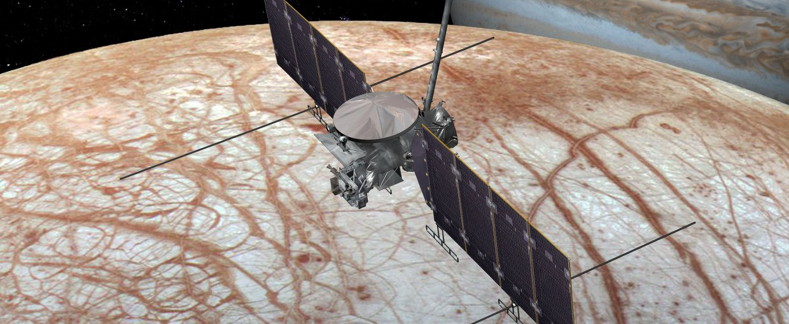